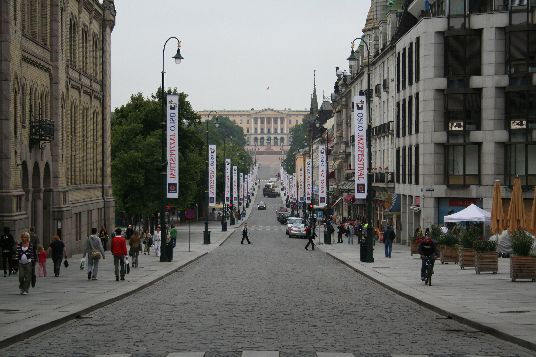

Se vi dicono che Oslo è la città più bella del Nord Europa non credeteci. Oslo è fredda, malfamata, inospitale ed il costo della vita è assolutamente inaffrontabile per i nostri standard Sud Europei. Ma Oslo è anche un posto speciale, con una sua anima ben definita e col suo fascino un po’ vichingo di città affacciata sul fiordo. Una micrometropoli moderna e multietnica schiacciata tra scenografiche colline e un mare punteggiato da una moltitudine di isole, in equilibrio precario tra asfalto e natura. Questa capitale dal fascino un po’ noir si presta in modo ottimale a far da sfondo agli adrenalinici thriller di Jo Nesbo, scrittore norvegese del momento e portabandiera del crime scandinavo. Harry Hole, il tormentato protagonista di quelli che, ad oggi, sono dieci libri caratterizzati da atmosfere hard boiled e paesaggi mozzafiato, è una creatura di questa città e prende vita tra le sue strade, i suoi scorci ed i suoi locali. Lasciate che ThrillerNord vi guidi, SULLE TRACCE DI HARRY, alla scoperta della vera Oslo raccontata nelle pagine di Jo Nesbo.
BISLETT- ST-HANSHAUGEN

A pochi passi dall’imponente Bislett Stadion troviamo una via molto speciale chiamata Sofies Gate. Qui, al civico 5, come testimonia la targhetta sul campanello, c’è la dimora di Harry Hole . Diciamo pure che il motto “nemo propheta in patria” in questo caso non vale, o quantomeno non vale per H.H , che qui è una vera star e attira frotte di turisti.

Se da casa di Harry giriamo l’angolo e imbocchiamo una via chiamata Dalsbergstein, troveremo un altro luogo ricorrente nelle peregrinazioni alcoliche del nostro eroe: l’Under Water Pub. Si tratta di un locale molto in voga, non solo per l’arredamento molto particolare che ricorda un fondale marino, ma anche e soprattutto per l’ottima musica live che offre.
A poche decine di metri troveremo un altro locale dove il detective è un habitué: il ristorante Schroder. Questo ristorante, che si trova al numero 8 di Waldemar Thranes Gate, non è esattamente la bettola che Nesbo descrive, anzi, è uno dei ristoranti più antichi della città e serve cibo tipicamente Norvegese a prezzi tutto sommato contenuti. Il ristorante è stato anche utilizzato come set cinematografico per le riprese di alcune scene del film “The Snowman” con Michael Fassbender nei panni di H.H., in uscita nel 2017.
Dato che siamo da Schroeder guardiamoci un attimo intorno e torniamo con la memoria alle pagine di NEMESI del 2002. Harry sta indagando su una rapina in banca degenerata in omicidio. Rakel è lontana. Lui è solo, si è messo in un grosso guaio e non riesce a resistere alle lusinghe del Jim Beam. Lo troviamo qui, in uno stato pietoso a tamponare la sua dipendenza alcolica con una birra, mentre cerca di mantenere una parvenza di sobrietà. Con lui c’è l’eccentrico psicologo Stale Aune, in veste di consulente della polizia e di amico. Insieme, cercano di decifrare lo strano comportamento del rapinatore e della vittima.
KARL JOHANS GATE/EGERTORGET
 Questa strada lunghissima ed in gran parte pedonale, è la strada più famosa della Norvegia e collega Jernbanetorget, (l’impronunciabile piazza su cui si affaccia la Sentral Stasjon) al Palazzo Reale. Karl Johans gate non è solo l’arteria principale del centro storico ma è anche il cuore pulsante della movida multietnica della capitale grazie ai tanti negozi, locali, giardini ed edifici pubblici che vi si affacciano. Lasciandoci alle spalle l’imponente scultura bronzea della tigre di Jernbanetorget in pochi minuti si arriva allo Stortinget, il Parlamento Norvegese: un bell’edificio in arenaria sorvegliato da leoni di marmo e circondato da bellissimi giardini.
In prossimità del Parlamento Karl Johans Gate si allarga a formare una piazza chiamata Egertorget. Questa piazza è il salotto buono di Oslo, qui, sotto la grande insegna vintage del cioccolato Freia, ci sono tutti i punti vendita delle grandi griffes internazionali e una moltitudine di caffè e ristoranti alla moda.
Guardatevi intorno e calatevi nell’atmosfera del libro “La ragazza senza volto” del 2005: E’ una fredda serata di metà dicembre, per le strade del centro impazza la frenesia degli acquisti natalizi. A Egertorget si sta svolgendo un concerto organizzato dall’Esercito della Salvezza e c’è tantissima gente. Inizia a nevicare. Un sicario venuto dalla ex Jugoslavia si confonde tra la folla, approfitta della confusione, mira e spara con la sua calibro nove. A terra rimane un ragazzo in uniforme. La neve sotto il suo corpo si macchia di rosso. Il killer scappa: ha pianificato attentamente la fuga verso l’aeroporto ma tutto sembra andare tremendamente storto. Sulla scena del crimine arrivano il commissario Harry Hole, l’ispettore Halvolsen, il capo della scientifica Beate Lonn ed il commissario capo Gunnar Hagen.
SLOTTPARKEN/HOLBERGS GATE
Come tutti ben saprete la Norvegia è una monarchia costituzionale ereditaria. L’attuale sovrano Harald V e la consorte Sonia dimorano nel palazzo neoclassico del XIX secolo chiamato Kongelige Slott, (normalmente abbreviato in Slottet). Il castello, immerso nel bellissimo Slottparken, si trova all’estremità finale di Karl Johans Gate.
Il 17 maggio di ogni anno, per la festa nazionale Norvegese in cui si festeggia l’anniversario dell’entrata in vigore della Carta Costituzionale, i due km di strada rettilinea che congiungono Jernbanetorget al Castello diventano il percorso di una gioiosa e pittoresca parata che coinvolge un vero e proprio fiume di persone.
E’ proprio in una di queste giornate di festa che Harry -ne IL PETTIROSSO del 2000 - si trova a lottare contro il tempo per sventare un attentato. Il cecchino si è appostato nella lussuosa suite panoramica dell’Hotel Radisson Sas in Holbergs Gate, la strada che costeggia il parco del Castello: nel mirino telescopico del fucile di precisione Marklin c’è un bersaglio eccellente e nel cuore dell’attentatore un rancore che risale al 1945.